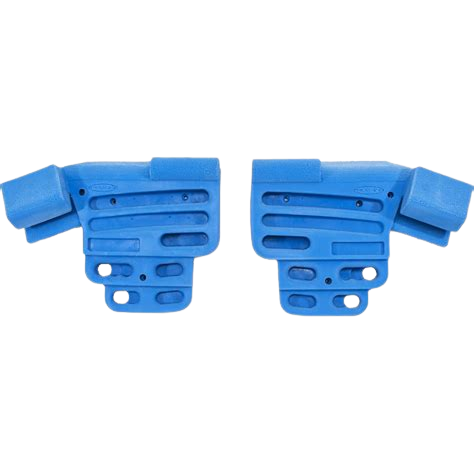

Antagonistic Training
If you end up getting serious about climbing and want to do the absolute maximum to keep yourself injury free, and strong. You have to do some antagonistic training. This means hitting the muscles that climbing doesn't normally get. Mainly you need to train your legs and chest. Boss Le here has an excellent video on how to balance a gym routine with a climbing routine to hit all time personal heights.
Hangboard Training
Hangboarding is DANGEROUS! If you feel any pain or weirdness in your fingers STOP. This is an advanced form of training that can very easily lead to injury that will keep you home for the season. If you have climbed over a year and decide you want to start training fingers though you should keep to it once a week at first. My regime is 2x a week. I will hold on to each ledge in a drag hold for 7 seconds on with 5 seconds off 3 times. I do this usually on mondays and thursdays as i climb on wednesdays and the weekends. Tuesdays are antagonistic training and Thursdays are legs so I have friday to complearly rest.
Mobility Training
This is everyone's least favorite part about being healthy. Stretching, ew. It is necessary sadly so I recommend keeping your hips super flexible and climbing should keep the upper body fairly flexible. Lower body mobility plays a surprising role in climbing where a lot of moves can be completely inaccessible to someone if they cant get their legs up or in a weird position.
Skin Care
Skin care is something you will quickly become obsessed with so you might as well get ahead of the game. Keeping your callus filed smooth and using moisturizer that keeps your skin tough are the two most important parts of a climber's skin care. If your hands are super tender from cuts or ripped off calluses then you can't climb as hard so it's important to treat your hands nice and keep them smooth. Most regular lotions use products that can soften calluses so I recommend using something like working hands or rhino skin to keep your hands healthy.
Training Music
Lastly you need something jamming to listen to when climbing or training. Here is my favorite song to listen to when climbing.
// drake